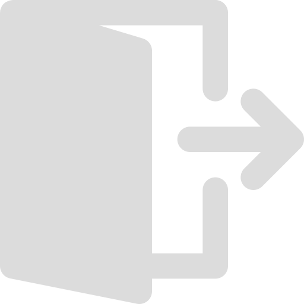

<!--- Os query params não estão sendo mais usados ----->
<mat-sidenav-container fullscreen  class="sidenav-container">
  <mat-toolbar>
    <header style="width:100%">
      <nav class="navbar">
        <div>
          
          <span class="spanTop" >Gerenciamento Uerj</span>
          <button  id="buttonMenu" (click)="cadastrarCurso()">Cadastrar curso</button>  
        </div>
        
      </nav>  
    </header>
  </mat-toolbar>
  <mat-sidenav   id="sidenav" [(opened)]="opened" >
    <div  class="dadosUser">
      <h5 style="color:gainsboro"><strong>Bem vindo!</strong></h5>
    </div>
    <mat-nav-list style="position: relative;top: 42%;transform: translateY(-50%); ">
      <a mat-list-item routerLink="perfil" [queryParams]="{codLogin:newLogin[0],codCurso:newLogin[3]}"> 
        
        &nbsp;<span class="spanLinkSidenav">Perfil</span>
      </a>
      <a mat-list-item routerLink="professor" [queryParams]="{codCurso:newLogin[3]}"> 
        
        &nbsp;<span class="spanLinkSidenav">Professores</span>
      </a>
      <a mat-list-item routerLink='materias' [queryParams]="{codCurso:newLogin[3]}"> 
        
        &nbsp;<span class="spanLinkSidenav">Matérias</span>
      </a>
      <a mat-list-item routerLink='provas' [queryParams]="{codLogin:newLogin[0],codCurso:newLogin[3]}"> 
        
        &nbsp;<span class="spanLinkSidenav">Provas</span>
      </a>
    </mat-nav-list>
  </mat-sidenav>
  <router-outlet></router-outlet>
</mat-sidenav-container>
